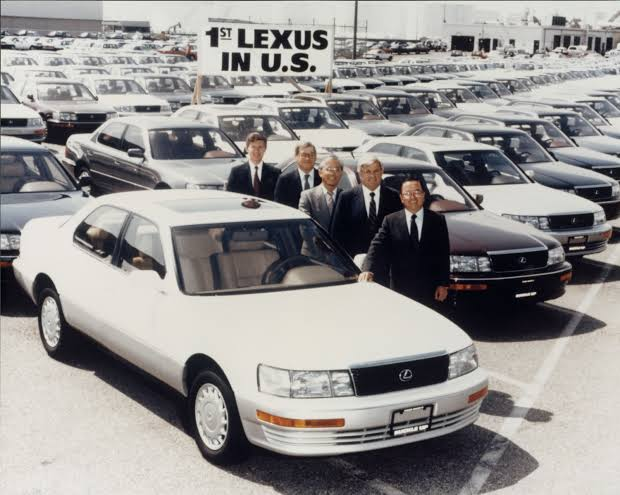
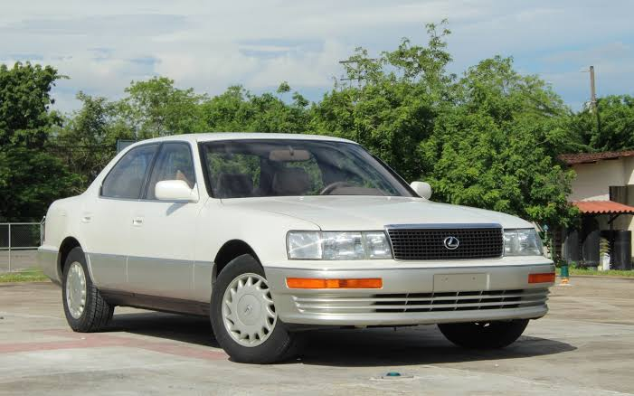
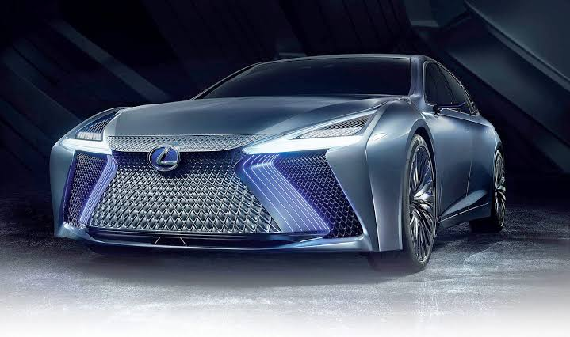

| Company name | Lexus |
|---|---|
| Founder | Eiji Toyoda |
| Founded on | 1 October 1986, Aichi, Japan |
| Headquarters | Nagoya, Aichi, Japan |
| Parent organization | Toyota |
| Chairman | Masakazu Yoshimura |
| CEO | Mark Templin |
| No.of production plants | 5 |
| Customer service | 1800 3005 3987 |
Since Lexus arrived on the world stage in 1989, we have constantly developed our business. Having started with just two models sold exclusively in the USA, we have steadily expanded both our product range and our global reach. Even within a year from our launch, we established a presence in 17 different countries, including in Europe, while today the number is more than 90, making us a luxury brand with genuine international recognition. The expansion continues today, not just in the automotive world, but taking our commitment to luxury, creativity and innovation into many different fields, from film and product design to ocean going yachts and amazing lifestyle experiences.
Without the support of Akio Toyoda, President and Member of the Board of the Toyota Motor Corporation, the legendary Lexus LFA supercar may never have been built. Approached for support in 2002 by the vehicle’s creators, Chief Engineer Haruhiko Tanahashi and the late master driver Hiromu Naruse, Toyoda-san quickly became the LFA’s primary champion.
The world’s first high-performance luxury hybrid sedan is launched. The GS 450h offers a unique combination of performance, economy and low emissions. Four world firsts in advanced safety technology are introduced with the new LS: Advanced Obstacle Detection System, Emergency Steering Assist, Rear Pre-Crash Safety system and Driver Monitoring System.
Lexus introduces the Lexus Safety System + package of advanced active safety features, designed to help prevent accidents happening and lessen the consequences if an impact does occur. Features include a Pre-Collision System, Lane Departure Alert and an Adaptive High-beam System. The visionary Lexus LF-FC (Lexus Future-Flagship Car/Fuel Cell) Concept offers a glimpse of the design and technology under consideration for a future flagship sedan that could reach the market around the end of the decade.